Currently, there is no standalone speech prosody model that can be flexibly integrated into various downstream speech tasks, such as text-to-speech (TTS) synthesis, and that also offers explicit control over pitch, energy, and phoneme duration. An explicit prosody modeling framework that bridges this gap is presented, employing a Perceiver I/O architecture as the backbone to accommodate varying lengths of speech signals. A hybrid regression and flow-matching strategy is proposed to handle the trade-off between deterministic and probabilistic duration estimation, respectively. Temporal alignment is enforced across all cross-attention layers via a soft alignment loss and summary rotary positional embeddings. The proposed model is pre-trained on the GigaSpeech corpus and benchmarked against competitive baselines, namely StyleTTS2 and FluentSpeech. Performance is evaluated on GigaSpeech and VoxPopuli using prosodic metrics at multiple levels of granularity. The proposed prosody model is validated in a downstream TTS task, and perceptual listening tests are conducted. For both pre-training and TTS objectives, the proposed model outperforms existing baselines in objective and subjective evaluations. Furthermore, it is demonstrated that the fusion of prosodic features from the proposed model with existing state-of-the-art models improves two additional downstream tasks: word prominence and emotion recognition.
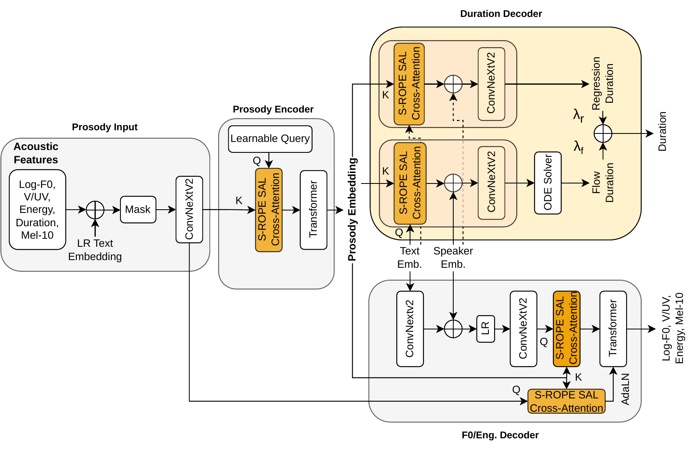
Fig. 1: Proposed prosody modeling framework, comprising a Prosody Input module, a Perceiver I/O–based Prosody Encoder, an F0 and Energy Decoder, and a hybrid Duration Decoder that integrates both regression and flow-matching components. The overall architecture follows ProMode. However, a new Duration Decoder (top right block) is included and the cross-attention layers are modified (highlighted in orange). At test time, the outputs of the two duration prediction heads are interpolated. Q and K denote query and key, respectively.
Hybrid duration decoder. The duration head interpolates a regression decoder and a flow-matching decoder with weights λr and λf (λr + λf = 1). At the selected operating point (λr = 0.1, λf = 0.9) the model attains significantly lower consonant and vowel KS than the regression-only ablation on both corpora (1.6–2.4× lower, p < 0.05, Benjamini–Hochberg corrected) and is indistinguishable from the flow-only ablation, i.e., the hybrid keeps the distributional fidelity of the flow decoder while retaining a deterministic component.
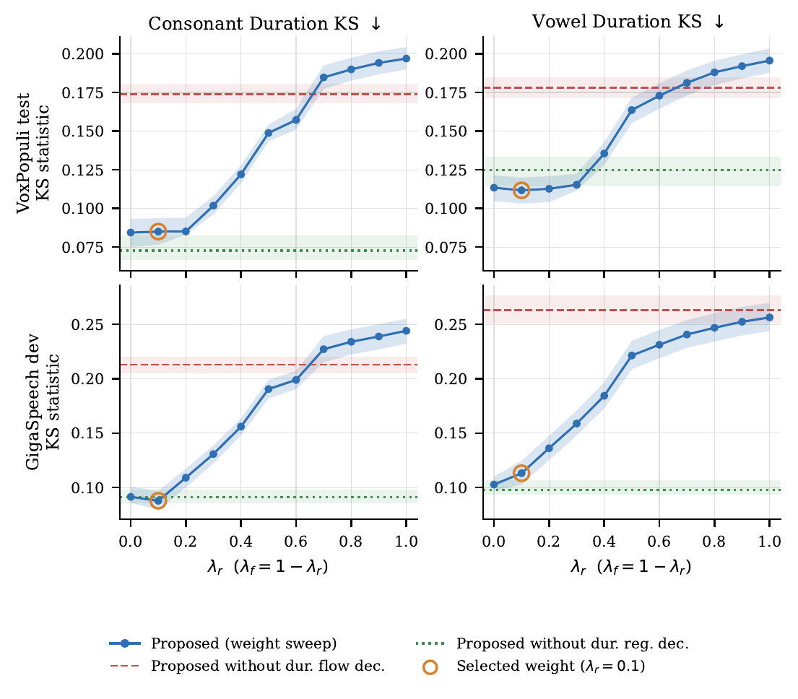
Fig. 2: Distributional comparisons on VoxPopuli test (top) and GigaSpeech dev (bottom) sets for consonant durations (left) and vowel durations (right) as a function of the duration decoder interpolation weights (λr for the regression decoder, λf for the flow decoder, with λr + λf = 1). The Kolmogorov–Smirnov (KS) statistics (lower is better) to the ground-truth durations are reported for each plot. Dashed (without the duration flow decoder) and dotted (without the duration regression decoder) lines mark the two duration decoder ablations. The circled marker indicates the selected interpolation weights (λr = 0.1, λf = 0.9) used in the main results. Bands are 95% CIs from a paired bootstrap over utterances (10,000 resamples).
Distributional match. Point-wise metrics such as MAE favor mean-regressing predictions and cannot detect whether a model preserves the spread and heavy tails of natural prosody, so the two-sample KS statistic is reported over the full empirical CDF. FluentSpeech and StyleTTS2 fail to capture the variance of these distributions. The proposed model produces distributions closer to the ground truth and achieves relative KS improvements of 61% and 68% for vowel and consonant durations, respectively, and 58% for F0, over the strongest baseline in each case.
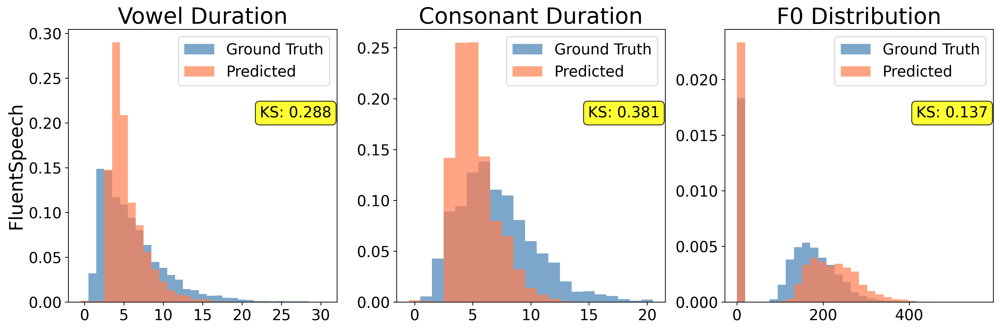
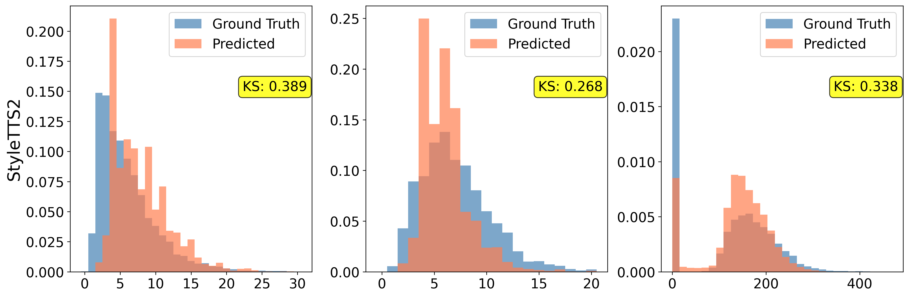
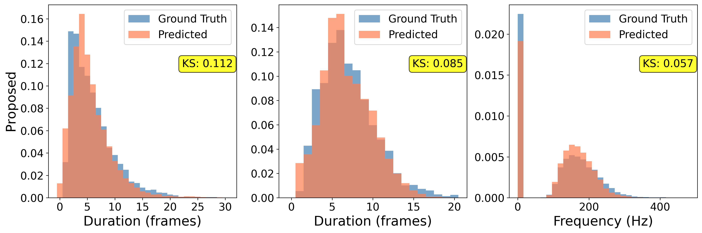
Fig. 8: Distributional comparison on VoxPopuli for vowel/consonant durations (left two columns) and F0 (right column), between FluentSpeech (top), StyleTTS2 (middle), and the proposed model (bottom). The KS statistic (lower is better) to the ground truth is reported for each plot. Each histogram is normalized to unit area.
A downstream TTS task is evaluated by integrating the proposed prosody model with a retrained FluentSpeech. At test time, the first half (context) of an utterance is used as an audio prompt, and prosody is predicted for the second-half (masked) transcript, replacing FluentSpeech's built-in duration and F0 prediction. Synthesis is then performed with a FluentSpeech model retrained on GigaSpeech-XL (FluentSpeech-Up) and a pre-trained BigVGAN vocoder. The same protocol is applied to all baselines. The samples below are the stimuli used in the ABX listening tests; the full survey protocol—consent statement, Prolific prescreening criteria, attention checks and exclusion procedure, listener instructions, and survey interface—is documented in the supplementary material of the manuscript.
In the downstream TTS setup, the proposed model yields 18.5% higher AutoPCP than the best baseline (and better SECS), indicating that it transfers prosody better. WER is not improved over the other TTS approaches, which may be because those models are trained with full spectrogram-based losses, whereas the proposed approach models only prosody during pre-training and may omit spectral cues needed for low WERs. The proposed model nevertheless has the advantage of being task-agnostic and is not fine-tuned specifically for TTS.
Two ABX surveys were run on Prolific, one on the GigaSpeech test set and one on the VoxPopuli-EN test set, each with 40 native English listeners. Listeners judged whether the proposed method or a baseline was more prosodically similar to the ground truth. The proposed model is significantly preferred over FluentSpeech and StyleTTS2 on both test sets. Against FluentSpeech-Up, which is trained on 10× the data with 3× the parameters, the proposed model is significantly preferred on VoxPopuli, while on GigaSpeech the preference rate does not differ significantly from chance. The proposed model therefore surpasses the baselines trained under comparable conditions and remains competitive with a substantially larger system.
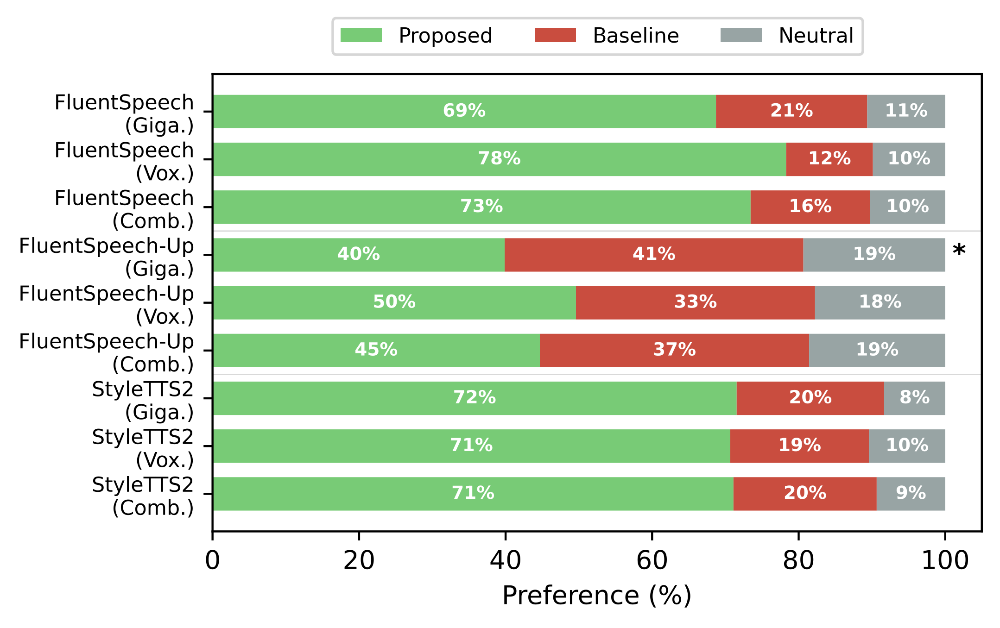
Fig. 9: ABX preference scores of the proposed prosody model against the baselines using GigaSpeech (Giga.), VoxPopuli (Vox.), and the combined (Comb.) test sets. The green/red/gray colors denote Proposed/Baseline/Neutral, respectively. Neutral indicates that A and B are equally similar to the ground-truth speech. “*” flags statistical insignificance (BH-adjusted p > 0.05). Tests are on the neutral-excluded preference rate, whereas the bars include neutral responses. The combined bars pool the two test sets, are not independent of the other two rows, and are excluded from the correction family; they carry no marker.
On speaker- and text-disjoint emotion recognition (arousal, valence, dominance) on IEMOCAP, the proposed model—never trained on emotional speech or emotion labels—reaches 0.595 mean CCC, above both the raw prosody signals (0.501) and eGeMAPS (0.518), significantly on all three dimensions (BH-adjusted p ≤ 0.02).
Fusing the proposed prosody embeddings with a self-supervised backbone increases mean CCC for every backbone, and more than raw prosody or eGeMAPS features do. The gains are significant on valence for all seven backbones and on dominance for six, but on arousal for only two (e.g. +0.021/+0.020 on valence/dominance for WavLM-base against +0.007 on arousal), which suggests that arousal is largely already captured by SSLs unlike valence and dominance. Gains over task-supervised backbones are smaller on average but still significant, and give the two highest mean CCC values overall.
For 2-class word prominence, the frozen latent embeddings of the proposed model with a single learned linear layer reach 0.856 accuracy, above the raw prosody features that the model itself takes as input (0.843) and above BERT-base (0.802); both margins are significant under a paired speaker-clustered bootstrap (BH-adjusted p < 0.001). This indicates that the learned representation encodes more than the raw prosody values can capture, and that these labels are only partially recoverable from lexical content.
Late fusion improves every backbone, and the best system overall is a fusion (0.881 accuracy for Whisper-large-v3 + Proposed). The improvement is largest for the weakest backbone (wav2vec2-base, +0.021) and decreases to +0.005–0.009 for stronger backbones. As in emotion recognition, this indicates that SSL backbones—even with task supervision and more scaling—can still lack prosodic information that is useful for prosody-related downstream tasks.
Perceiver-style encoders represent variable-length inputs using a fixed set of learnable latents (queries). Because these latents are not inherently tied to specific time indices, their cross-attention to text and acoustic prosody features may be weakly structured or temporally inconsistent. To encourage temporally coherent alignments, Soft Alignment Loss (SAL) and summary rotary positional embeddings (S-ROPE) are applied to the model's cross-attention layers, including those involving the fixed-length prosody latents.
Temporal alignment is visualized using heatmaps of cross-attention weights for a sample from GigaSpeech-Dev. As shown in Figs. 3–6, the full model (SAL + S-ROPE) exhibits a more pronounced diagonal structure, consistent with improved temporal alignment between (i) text and prosody latents and (ii) acoustic prosody features and prosody latents.
Fig. 3 shows the cross-attention between the length-regulated (LR) text sequence (with speaker embedding) and the fixed-length prosody embeddings. In this example, the full model displays a clearer diagonal trend than the ablations. Removing SAL produces a larger qualitative degradation than removing S-ROPE, which may be because SAL directly regularizes cross-attention toward a diagonal prior, whereas S-ROPE provides a positional inductive bias. Fig. 4 shows a similar trend for cross-attention between the acoustic prosody input and the fixed-length prosody embeddings in the F0/Energy decoder.
Fig. 5 shows cross-attention between the text (with speaker embedding) and the fixed-length prosody embeddings in the duration decoder. The full model again shows more structured attention. Interestingly, multiple diagonal bands are observed, which suggests that alignment remains broadly monotonic but is split into several locally monotonic regions (groups of prosody latents attend to successive text spans with small offsets) rather than forming one continuous diagonal as in the F0/Energy Decoder.
Fig. 6 shows encoder cross-attention between the learnable prosody queries and the acoustic prosody input. In this example, the second half of the utterance/prosody input is masked; correspondingly, the diagonal trend is primarily visible in the unmasked region (most clearly in the log-scaled, contrast-enhanced visualization).
The cross-attention maps show where the model attends to; a masking probe additionally tests which part of the predicted F0 each prosody latent controls. One contiguous group of latents is masked at a time in the F0/Energy Decoder cross-attention (18 groups of about 14 latents, each covering about 330 ms in a six-second sentence), with text, speaker embedding, and ground-truth durations held fixed. The fixed-length prosody embeddings achieve ρ = 0.96 (ordering) and κ = 0.46 (localization), a clear diagonalization. Without SAL the ordering survives (ρ = 0.89) but the locality spreads across the utterance (κ = 0.21); without S-ROPE the ordering itself breaks down (ρ = 0.61). The two mechanisms are therefore complementary: S-ROPE ties each latent index to an output frame position, whereas SAL concentrates the influence of that latent around this position.
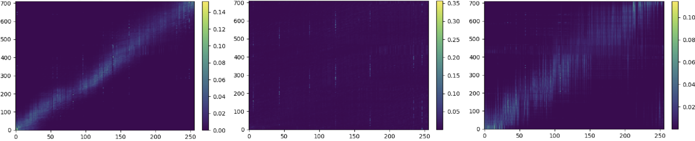
Fig. 3: F0/Energy Decoder cross-attention {LR Text + Speaker Embedding, Prosody Embedding}. Left to right: proposed model, proposed model without SAL, proposed model without S-ROPE, respectively.
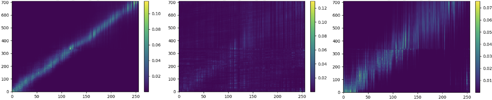
Fig. 4: F0/Energy Decoder cross-attention {Prosody Input, Prosody Embedding}. Left to right: proposed model, proposed model without SAL, proposed model without S-ROPE, respectively.
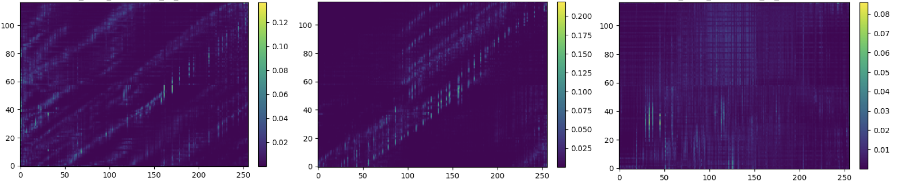
Fig. 5: Duration Decoder cross-attention {Text + Speaker Embedding, Prosody Embedding}. Left to right: proposed model, proposed model without SAL, proposed model without S-ROPE, respectively.
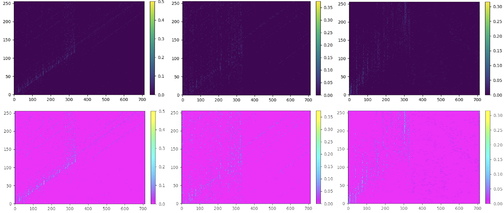
Fig. 6: Encoder cross-attention {Learnable Prosody Query, Prosody Input}. Left to right: proposed model, proposed model without SAL, proposed model without S-ROPE. The upper row shows raw attention weights; the lower row is log-scaled and contrast enhanced for visibility.
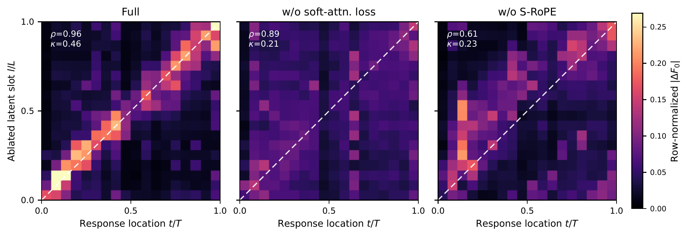
Fig. 7: Temporal alignment between the prosody latents and the predicted F0, measured by iteratively masking contiguous blocks (14 latents per group) in the F0/Energy Decoder cross-attention. Cell (l, t) is the response at frame t/T to masking the group at l/L; rows sum to one, and the dashed line marks the target diagonal. ρ is the Spearman correlation between the masked group index and the center of mass of its response (ordering); κ is the fraction of the response within ±1 bin of the diagonal (localization). Left to right: proposed model, proposed model without SAL, proposed model without S-ROPE.